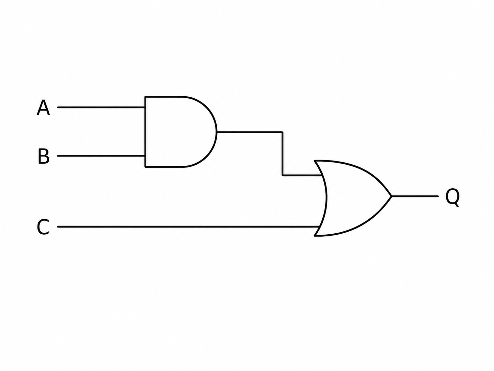
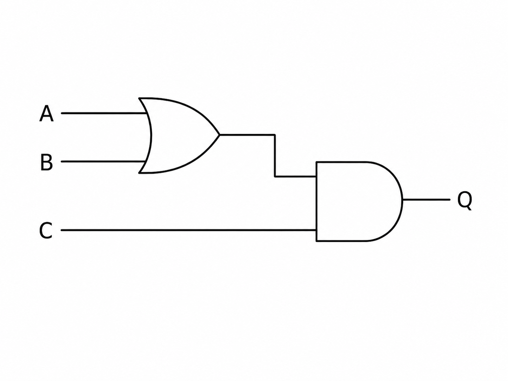
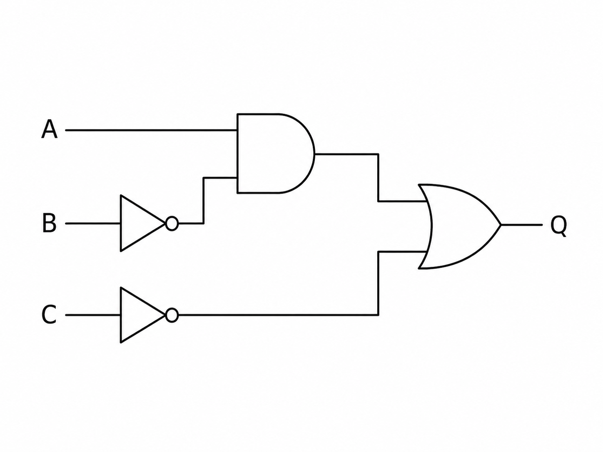
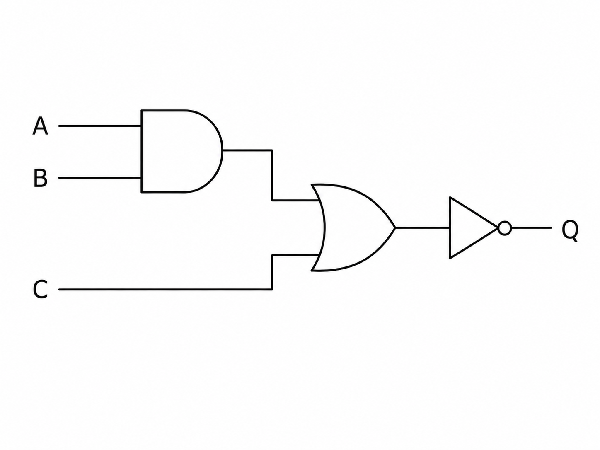

1) Write the Boolean expression represented by Figure 1. (3 marks)

Mark scheme
- Identifies A AND B.
- Identifies that result is ORed with C.
- Correct expression: Q = (A AND B) OR C.
Paper 2
OCR-style practice on reading, drawing and correcting AND, OR and NOT logic gate diagrams.
1) Write the Boolean expression represented by Figure 1. (3 marks)

2) Draw a logic gate diagram for Q = (A OR B) AND C. (4 marks)

3) Draw a logic gate diagram for Q = (A AND NOT B) OR NOT C. (5 marks)

4) A heater turns on only when the room is cold and the timer is active. Draw the logic diagram and name the gate used. (3 marks)
5) Figure 2 shows Q = NOT((A AND B) OR C). Explain why the NOT gate is placed at the end of the diagram. (2 marks)
